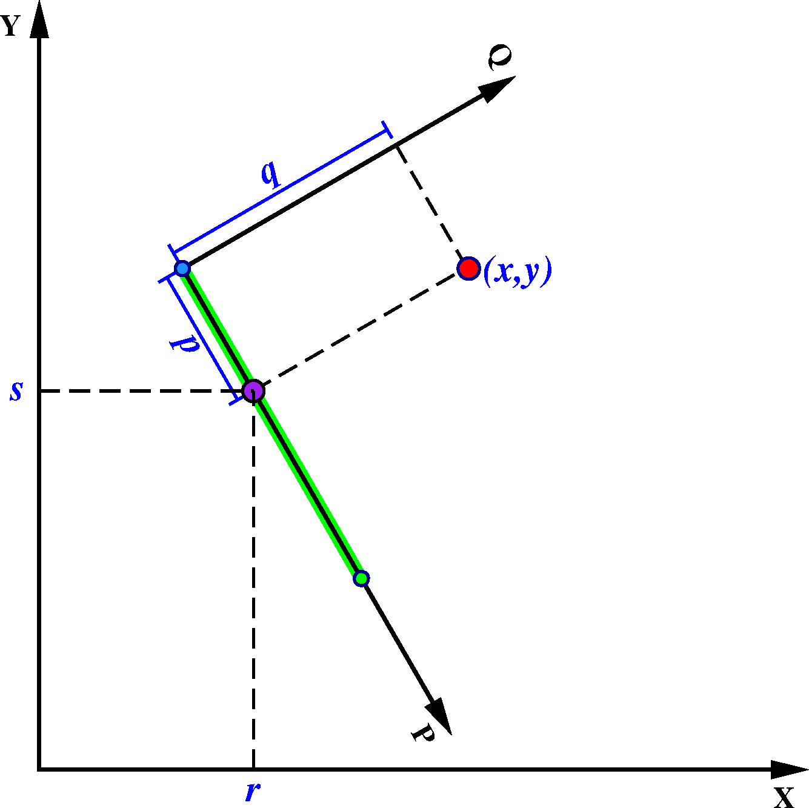

13.38 project¶
| 官方文档: | project |
|---|---|
| 简介: | 生成测线、将数据点投影到测线上 |
该模块具有三个主要功能：
- 生成测线
- 指定测线和数据点，得到该点在测线坐标系下的坐标，即下文中提及的
p和q - 指定测线和数据点，得到该点在测线上的投影点的坐标，即下文中提及的
r和s
以上三个功能均要求用户首先定义测线，测线可以用如下三种方式中的任意一种来定义：
- 用
-C选项定义测线的起点，并用-A定义测线方位角 - 用
-C选项定义测线的起点，并用-E选项定义测线的结束点 - 用
-C选项定义测线的中心，并用-T选项定义rotation pole的位置
在指定测线后，如果要生成测线，输出测线上的点的坐标，可以使用 -G 选项。在指定测线后，用户再给出一个点(x,y) ，可以得到该点在测线的投影点以及该点在测线坐标系下的坐标:
x y z p q r s
其中：
x和y是数据在原坐标系下的坐标z是输入数据中的其余所有列p和q是数据点 (x,y) 在测线坐标系下的坐标r和s是数据点 (x,y) 在测线上的投影点在原坐标系下的坐标
可以使用 -F 选项设置要输出哪些变量。
下面详细解释一下这些变量的物理意义。

{kind=link}
project 示意图
图中的红点就是给出的点(x,y)。绿色粗线为测线。测线上有 3 个点，蓝色和绿色两个点为测线的起点和终点。以测线起点为原点，以测线为P轴，在测线起点按右手螺旋法则做垂直于P轴的Q轴，构成测线坐标系。点(x,y)在测线坐标系的坐标即为(p,q)。紫色点为点(x,y)在测线上的投影点，坐标为(r,s)。
13.38.1 必选选项¶
-C<cx>/<cy>- 对于定义1和2而言，该选项指定测线的起点坐标；对于定义3而言，该选项指定了旋转坐标下零经线所穿过的点
13.38.2 可选选项¶
-A<azimuth>- 定义1中用于指定测线的方位角
-E<bx>/<by>- 定义2中用于指定测线的终点
-F<flags>指定输出格式，
flags可以是xyzpqrs的任意组合。默认输出格式为
xyzpqrs。若使用-G选项，则输出格式为rsp-G<dist>[/<colat>][+h]生成测线模式。
该选项用于生成测线，此时不需要输入文件。
<dist>的单位规定见-Q选项。输出数据有三列：经度、纬度以及当前点离测线起点的距离。默认情况下，会按照大圆路径生成测线，当使用定义2 指定测线的两个端点时，可以通过指定<colat>来生成小圆。若使用
+h则会在段头记录中报告pole的位置。-L[w][<l_min>/<l_max>]- 仅坐标
p在<l_min>和<l_max>之间的数据会被投影到测线上。<l_min>和<l_max>的单位规定见-Q选项。如果是负数则表示反方向的数据范围。若使用了-E选项，则可以使用-Lw来限制只绘制能投影到测线起点和终点之间的数据。 -N- Flat Earth。在平面内使用笛卡尔坐标变换。默认使用球面三角。
-Q- 使用地图单位。即投影假设x、y、r、s 的单位是弧度，p、q、
<dist>、<l_min>、<l_max>、<w_min>、<w_max>的单位是千米。若不使用该选项，则所有量都假设为相同的单位。 -S- 将输出按照
p增序排列。 -T<px>/<py>- 定义3中用于指定rotation pole的位置
-W<w_min>/<w_max>- 仅坐标
q在<w_min>和<w_max>范围内的数据才会被投影到测线上。
13.38.3 示例¶
指定测线的起点和终点，在测线上每隔10千米生成一个点:
gmt project -C-50/10 -E-10/30 -G10 -Q > great_circle_points.xyp
指定测线的起点和终点，沿着colatitude=60的小圆上，每隔10千米生成一个点:
gmt project -C-50/10 -E-10/30 -G10/60 -Q > small_circle_points.xyp
利用 -F 选项指定输出哪些坐标来得到某点在某测线上的投影点:
echo 102 30 | gmt project -C103/31 -A225 -L0/500 -Frs -Q
已知某点，根据方位角和大圆距离计算另一点。已知一点(120, 25)，根据方位角 45 度，大圆距离 123 千米的点位置
gmt project -C120/25 -A45 -L0/123 -G123 -Q | tail -1